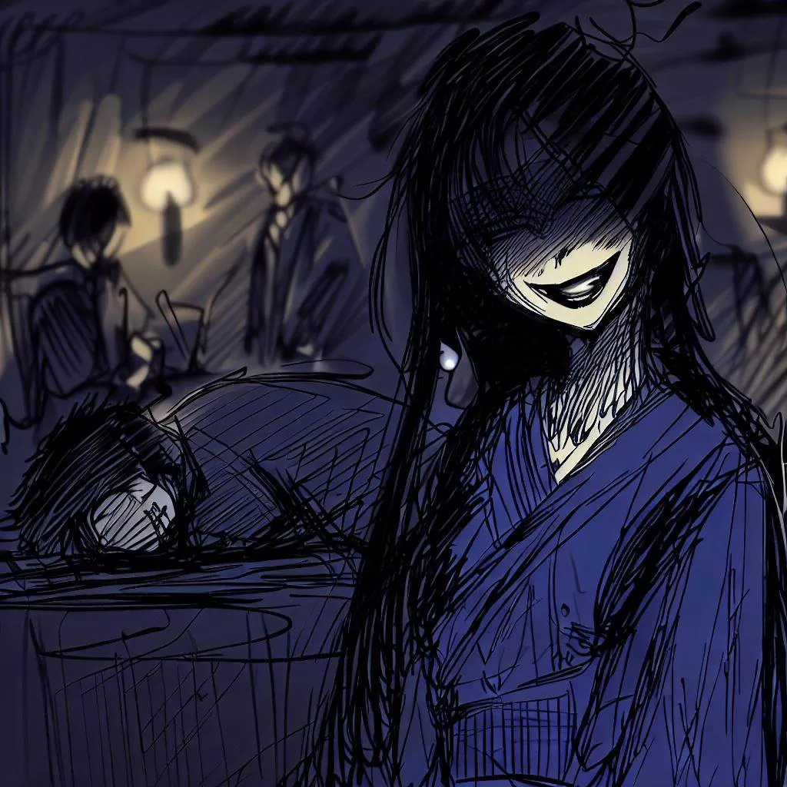
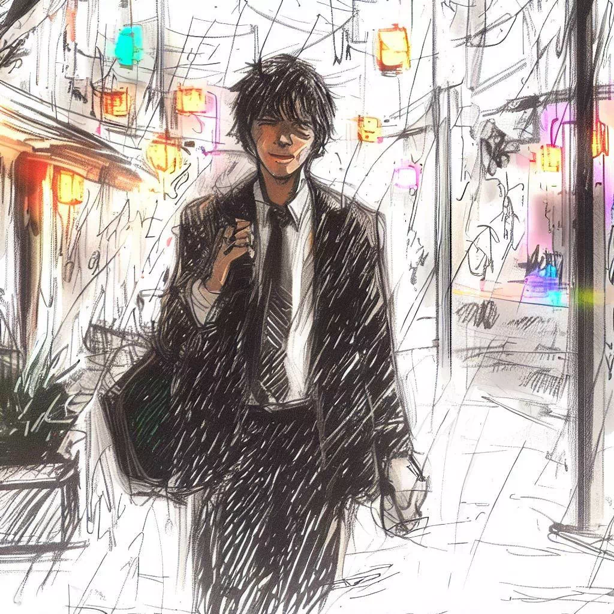

कोमायो: ओगी गेम की रहस्यमयी गूंज
मैं कोमयो को धन्यवाद कहना चाहता हूं। उन्होंने मुझे एक बहुत ही दिलचस्प रणनीति खेल सिखाया। मैं हमारी मुलाकात के बारे में बताऊंगा। यह एक याद है जिसे मैं वास्तव में पसंद करता हूं और मैं इसे यहां साझा करना चाहता हूं।
अज्ञात की ओर का रास्ता
दिन समाप्त हो गया और मैं अपना काम छोड़ कर जा रहा हूं। मैं ओसाका में हूं और मैं ताजगी भरी शाम की हवा महसूस करता हूं। शहर शांत है और मैं शांत महसूस करता हूं।

मैं सड़कों में घूमता हूं। इमारतें बड़ी और चमकीली होती हैं। वे रात में सुंदर दिखती हैं।
मैं एक जीवंत इलाके से गुजरता हूं जहां रेस्टोरेंट और लोग बातचीत कर रहे होते हैं। हालांकि मैं थक गया हूं, लेकिन मैं कुछ दिलचस्प करना चाहता ह
ूं। फिर, मैंने एक बार का ध्यान दिया जिसका नाम रीजेंसी बार था। यह एक ऐसी जगह है जहां लोग शोगी खेलते हैं।
मैं बार में प्रवेश करने की इच्छा महसूस करता हूं। मैं एक चुनौती उठाना और थोड़ा आराम करना चाहता हूं।
खेल का बार
मैं रीजेंसी बार में प्रवेश करता हूं। यह एक शांत जगह है जिसमें कोमल प्रकाश होता है। यहां के लोग शोगी खेल रहे हैं।
मैं एक गिलास साके का आदेश देता हूं। मैं आसपास देखता हूं। मैं लकड़ी और धूप की खुशबू महसूस करता हूं। मैं शोगी के टुकड़े हिलते हुए और लोगों की कोमल बातचीत सुनता हूं।
शोगी खेल रहे सभी आयु के पुरुष और महिलाएं हैं। वे अपने खेल पर केंद्रित हैं। वे हर चाल के साथ खुश, उदास या घबराए हुए दिखते हैं।
मैं एक महिला को अकेले मेज पर देखता हूं। वह सुंदर और शांत है। मैं उसके प्रति उत्सुक हूं। मैं उसके पास जाता हूं, मैं मुस्काता हूं और मैं
उससे पूछता हूं क्या वह मुझसे शोगी खेलना चाहती है।

एक अलग खेल
जब मैंने खेलने का अनुरोध किया, तो उसने मुस्कान दी।
उसने एक खेल का बोर्ड निकाला। यह एक कपड़े के नीचे छिपा हुआ था। मैं हैरान था। बोर्ड सामान्य से छोटा था। उसमें कम चौकोर और टुकड़े थे। सामान्य शोगी की तरह 9x9 चौकोरों के बजाय उसमें 8x8 चौकोर थे। प्रत्येक खिलाड़ी के लिए केवल 18 टुकड़े थे। मैं सवाल पूछने से पहले ही, उसने समझाना शुरू कर दिया। उसने कहा कि इस खेल को ओगी कहा जाता है।

वह एक विशेष टुकड़े के बारे में बात करती है। यह प्रिन्सेस टुकड़ा था। उसने कहा कि यह टुकड़ा खेल को अधिक गतिशील बनाता है। जब उसने मेरी आश्चर्यचकिता देखी, तो उसने मुस्कान दी। फिर, उसन
े बोर्ड पर टुकड़े रखना शुरू किया।
जैसे-जैसे वह टुकड़े रखती, मैं कुछ अलग देखता हूं। बोर्ड के कोनों में टावर थे। उसने समझाया कि ये टावर सामान्य शोगी की भाला की जगह लेते हैं।
जब सभी टुकड़े बोर्ड पर थे, तो मैं बहुत उत्साहित था। मुझे वास्तव में इस नए खेल को खेलने की इच्छा थी। और मैं इस रहस्यमयी महिला के बारे में अधिक जानना चाहता था।
खेल का परीक्षण
घड़ी की सूई टिकती जा रही है। चुप्पी केवल बोर्ड पर टुकड़ों के हिलने की आवाज से टूटती है। टुकड़े ठान के साथ हिलते हैं। प्रिन्सेस खेल को नेतृत्व करती है। खेल की चुप्पी कमरे को भर देती है। यह बहुत तीव्र है।
महिला बहुत अच्छी खिलाड़ी है। जब उसने मेरे टुकड़े को पकड़ लिया, तो वह उसे बोर्ड पर वापस रख सकती थी ताकि वह उसे अपने ही टुकड़े की तरह खेल सके। हर चाल जो वह चलाती है, वह मेरे लिए एक सबक होती है। वह हर टुक
ड़े को चालू करने के लिए योजना बनाती है, मैं उसकी योजना को देखने का प्रयास करता हूं, लेकिन यह असंभव होता है।
उसकी आंखें हर चाल के साथ चमकती हैं। उसकी मुस्कान हमेशा उसके चेहरे पर होती है। वह मुझसे बेहतर खिलाड़ी है, लेकिन मैंने कभी ऐसा महसूस नहीं किया कि मैं हार रहा हूं। हर चाल, हर खोने और जीतने का लम्हा, हर खेल का पल, यह सब मेरे लिए एक अनुभव था।
जब मैंने अंत में खेल हार दिया, तो मैंने उसे प्रशंसा की। उसने हंस कर कहा, "खेल में हारना या जीतना महत्वपूर्ण नहीं होता। यह वास्तव में खेलने का आनंद है।"

एक नया अनुभव
वह रात बहुत खास थी। मैंने एक नया खेल सीखा। मैंने एक नया दोस्त बनाया। और मैंने अपने आत्मा को एक नई तरह से खोजा।
बार का दरवाजा बंद हो गया। और मैं अँधेरी रात में चल पड़ा। मेरे दिल में एक
नई खुशी थी। मैंने सब कुछ पीछे छोड़ दिया था, लेकिन मैंने एक नया अनुभव लिया।

मैं घर लौटा, लेकिन वो रात मेरी यादों में बस गई। शायद कल मैं फिर जाऊंगा। शायद उस महिला को फिर मिलूंगा। और शायद मैं फिर से ओगी खेलूंगा।